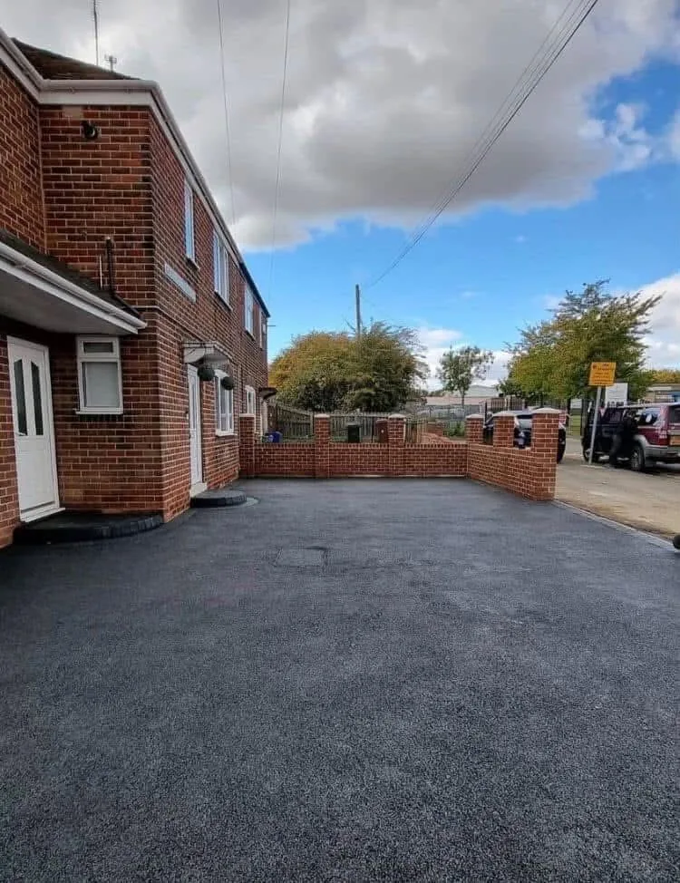
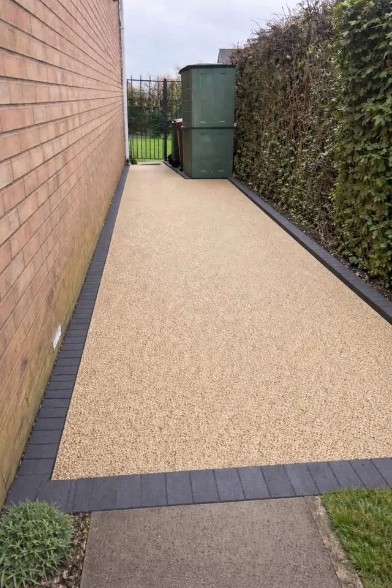
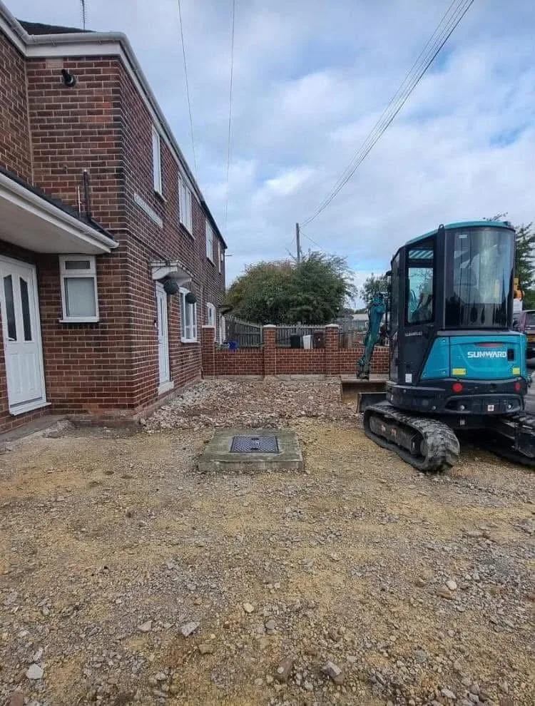
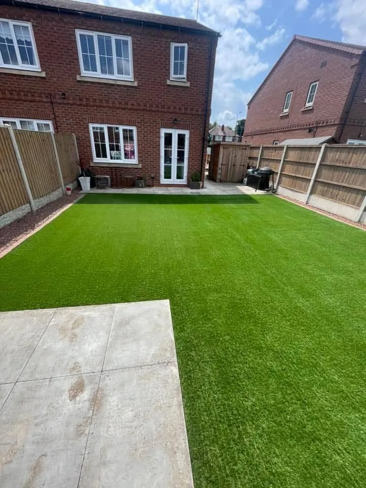
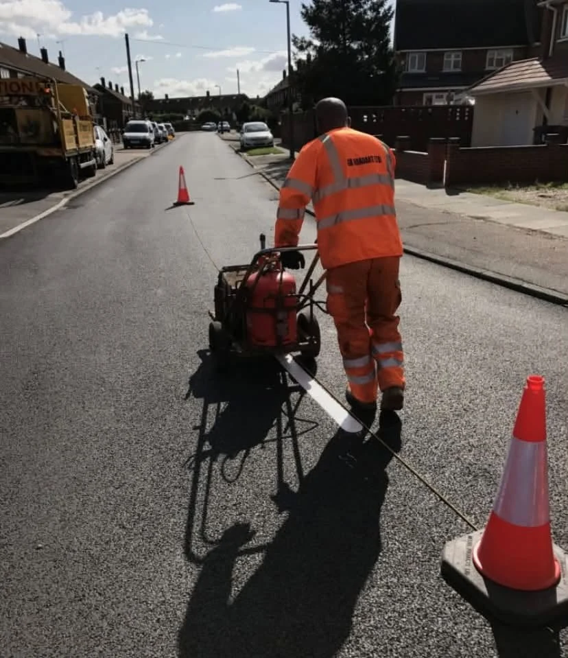
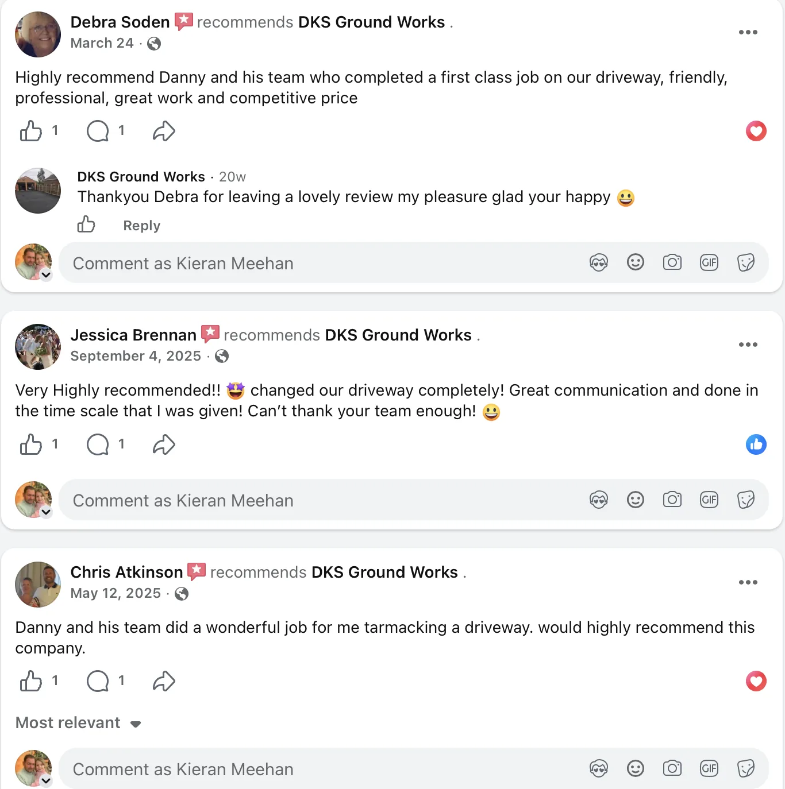

Tarmac
Tarmac Driveways
Hard-wearing, clean-looking surfacing for driveways, access areas and larger hardstanding.
Tarmac, block paving, resin-bound surfaces, patios and groundwork — built with a sharp finish and a practical approach from preparation through to completion.
DKS Ground Works handles complete external transformations — excavation and preparation, drainage, surfacing and finishing — with options for both domestic and commercial projects.

Hard-wearing, clean-looking surfacing for driveways, access areas and larger hardstanding.

Premium smooth finishes with crisp contrasting edging and strong kerb appeal.

Excavation, base preparation and site work completed properly before the visible finish goes down.

Practical outdoor layouts, paved areas and low-maintenance garden transformations.
The work speaks best when you can see the starting point and the finished surface side by side.

From fading car parks and residential H-bars to industrial warehouses, DKS provides precision line-marking services designed to keep sites safe, compliant and organised. Industry-standard hot-applied thermoplastic and high-grade cold plastic can be used for long-lasting performance.
Feedback supplied from the DKS Ground Works Facebook page.
“Highly recommend Danny and his team who completed a first class job on our driveway, friendly, professional, great work and competitive price.”
Debra Soden“Very highly recommended!! Changed our driveway completely! Great communication and done in the time scale that I was given! Can’t thank your team enough!”
Jessica Brennan“Danny and his team did a wonderful job for me tarmacking a driveway. Would highly recommend this company.”
Chris Atkinson
Get in touch with DKS Ground Works for a free, no-obligation quote. Call and WhatsApp details can be activated instantly once the business number is supplied.